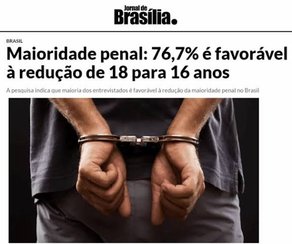

Maioridade Penal: Câmara aprova PEC que a reduz de 18 para 16 anos.

Maioridade Penal: Câmara aprova PEC que a reduz de 18 para 16 anos.
Texto avança no Congresso.
A redução da maioridade penal está sob discussão no Congresso Nacional após uma Proposta de Emenda à Constituição (PEC) ser aprovada pela Comissão de Constituição e Justiça (CCJ) na Câmara dos Deputados.
O texto que está em análise mantém a maioridade penal geral aos 18 anos, porém estabelece algumas exceções para os adolescentes de 16 e 17 anos para responderem criminalmente como adultos para os casos de:
Crimes hediondos, como por exemplo: Latrocínio, estupro e sequestro relâmpago seguido de morte;
Homicídio doloso (direto ou eventual): Ocorre quando o criminoso age com a intenção explícita de matar, ou quando assume conscientemente o risco de causar a morte a alguém.
Lesão corporal seguida de morte, exemplos: Violência doméstica, briga de bar, brigas de trânsito etc.
Como se trata de uma PEC, o texto aprovado segue sob um rito rigoroso e ainda não virou lei. Será criada uma comissão a Câmara para melhor análise do texto. Após isso, a proposta precisará ser votada em dois turnos, exigindo pelo menos 308 apoiadores dos 513 deputados. Se aprovada, a PEC segue ao Senado, onde também precisará passar pela CCJ local e por votação em dois turnos no Plenário.
A aprovação dessa Proposta de Emenda à Constituição gerou opiniões profundamente opostas. Especialistas jurídicos, sociólogos e parlamentares utilizam justificativas técnicas, sociais e constitucionais para defender suas posições:
Argumentos a favor dessa redução:
Consciência e discernimento: Defensores alegam que aos 16 e 17 anos os jovens já possuem pleno discernimento e maturidade intelectual para entenderam a gravidade e as consequências dos atos cometidos;
Combate ao aliciamento pelo crime: Argumenta-se que as facções criminosas recrutam intencionalmente menores de 18 anos para cometerem atos criminosos porque sabem que eles receberão punições menos severas. Essa lei servirá como proteção aos jovens, como forma de incentivar a não se colocarem nessas situações;
Fim da sensação de impunidade: Parlamentares apontam que a sociedade exige leis mais firmes contra a violência e que a atual impunidade encoraja menores a cometerem crimes;
Equivalência de direitos: Sustenta-se que, se o cidadão aos 16 anos já pode votar e escolher os governantes do país, ele também deve se responsabilizar por suas escolhas e responder criminalmente como adultos pelos seus atos;
Alinhamento internacional: Aponta-se que diversos países desenvolvidos aplicam processos judiciais e punições severas para jovens nessa faixa etária.
Argumentos contra a redução:
Institucionalidade: A maioridade aos 18 considerada cláusula pétrea e não pode ser mudada;
Pior civilidade: Presídios adultos aumentam a reincidência e entregam os jovens às facções criminosas;
Foco errado: A solução real exige investimentos em educações e oportunidades, não em prisões;
Jovens são vítimas: Estatísticas mostram que os adolescentes sofrem mais violência do que praticam;
Efeito rebote: O crime organizado passará a recrutar crianças ainda mais jovens (13 ou 14 anos).
Diante de visões tão diferentes, o debate sobre a maioridade penal reflete o desafio do Brasil em encontrar um equilíbrio entre a punição e a recuperação de seus jovens. Enquanto o Congresso Nacional analisa a proposta, o país segue dividido entre endurecer as leis criminais ou focar em reformas sociais e educacionais como caminhos para conter a violência urbana.
Feito por: V9xgury